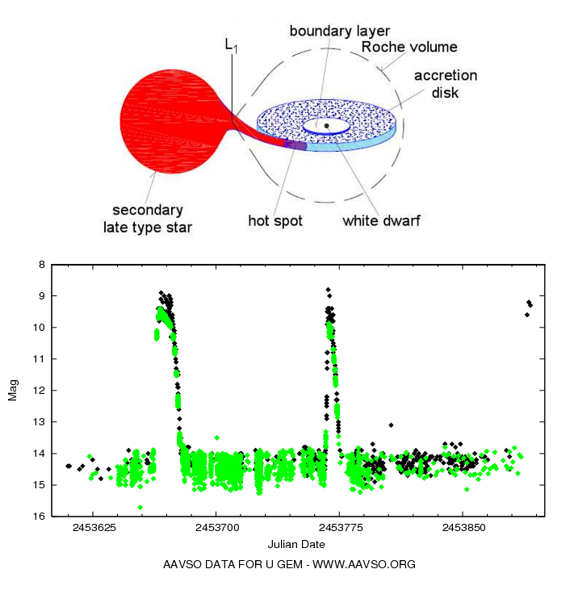

Cataclysmic variables (CVs) are binary star systems consisting of a white dwarf (WD)
accreting mass from a companion, most often a main sequence star. These systems show
strong irregular brightenings, commonly called outbursts.
I study a subtype of these objects, called dwarf novae (DNe), in which the material
accreted on the WD forms a disc around it. The conditions in this disc are so that
it is never stable, the viscosity of the material causes the local mass transfer
rate inside the disc to slowly increase. Once a critical value for the mass transfer
is reached somewhere in the disc, a perturbation propagates, increasing
the temperature and surface density throughout the disc. This raises the brightness
the disc, effectively causing an outburst. This process lasts for a couple of days or
weeks tends to reccur semi-periodically every week or month.